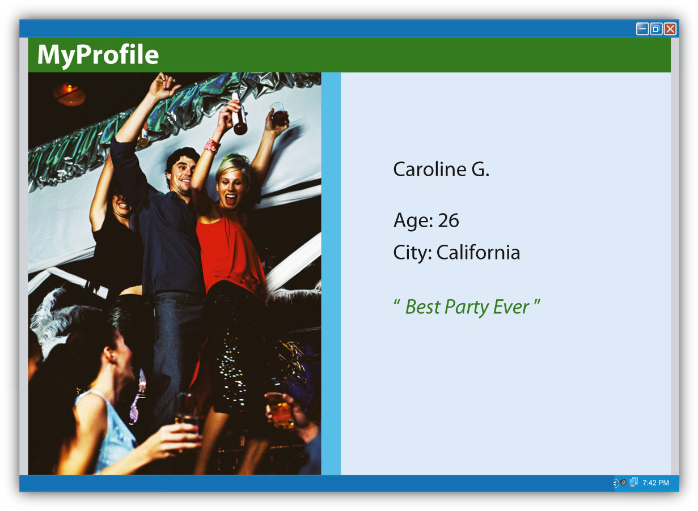

Figure 11.1
It used to be that applying for a job was fairly simple: send in a résumé, write a cover letter, and call a few references to make sure they will say positive things. The hiring manager understands that this is a biased view, designed to make the applicant look good, but that is all forgivable. After all, everyone applying for a particular job is going through this same process, and barring great disasters, the chances of something particularly negative reaching the desk of a hiring manager are not that great.
However, there is a new step that is now an integral part of this application process—hiding (or at least cleaning up) the applicants’ virtual selves. This could entail “Googling”—shorthand for searching on Google—their own name to see the search results. If the first thing that comes up is a Flickr album (an online photo album from the photo-sharing site Flickr) from last month’s Olympian-themed cocktail party, it may be a good idea to make that album private to ensure that only friends can view the album.
The ubiquity of Web 2.0 social media like Facebook and Twitter allows anyone to easily start developing an online persona from as early as birth (depending on the openness of one’s parents)—and although this online persona may not accurately reflect the individual, it may be one of the first things a stranger sees. Those online photos may not look bad to friends and family, but one’s online persona may be a hiring manager’s first impression of a prospective employee. Someone in charge of hiring could search the Internet for information on potential new hires even before calling references.
First impressions are an important thing to keep in mind when making an online persona professionally acceptable. Your presence online can be the equivalent of your first words to a brand-new acquaintance. Instead of showing a complete stranger your pictures from a recent party, it might be a better idea to hide those pictures and replace them with a well-written blog—or a professional-looking website.
The content on social networking sites like Facebook, where people use the Internet to meet new people and maintain old friendships, is nearly indestructible and may not actually belong to the user. In 2008, as Facebook was quickly gaining momentum, The New York Times ran an article, “How Sticky Is Membership on Facebook? Just Try Breaking Free”—a title that seems at once like a warning and a big-brother taunt. The website does allow the option of deactivating one’s account, but “Facebook servers keep copies of the information in those accounts indefinitely.”Maria Aspan, “How Sticky Is Membership on Facebook? Just Try Breaking Free,” New York Times, February 11, 2008, http://www.nytimes.com/2008/02/11/technology/11facebook.html. It is a double-edged sword: On one hand, users who become disillusioned and quit Facebook can come back at any time and resume their activity; on the other, one’s information is never fully deleted. If a job application might be compromised by the presence of a Facebook profile, clearing the slate is possible, albeit with some hard labor. The user must delete, item by item, every individual wall post, every group membership, every photo, and everything else.
Not all social networks are like this—MySpace and Friendster still require users who want to delete their accounts to confirm this several times, but they offer a clear-cut “delete” option—but the sticky nature of Facebook information is nothing new.Maria Aspan, “How Sticky Is Membership on Facebook? Just Try Breaking Free,” New York Times, February 11, 2008, http://www.nytimes.com/2008/02/11/technology/11facebook.html. Google even keeps a cache of deleted web pages, and the Internet Archive keeps decades-old historical records. This transition from ephemeral media—television and radio, practically over as quickly as they are broadcast—to the enduring permanence of the Internet may seem strange, but in some ways it is built into the very structure of the system. Understanding how the Internet was conceived may help elucidate the ways in which the Internet functions today—from the difficulties of deleting an online persona to the speedy and near-universal access to the world’s information.